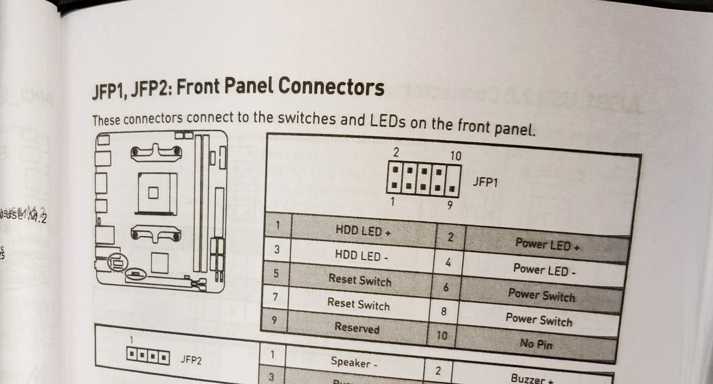
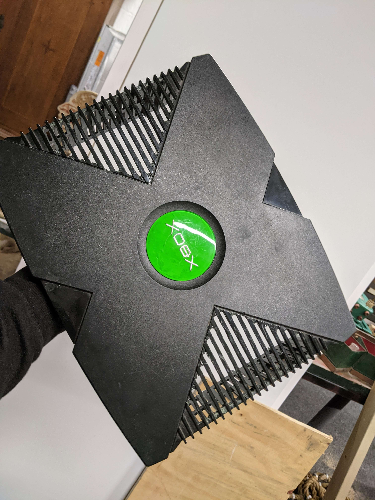
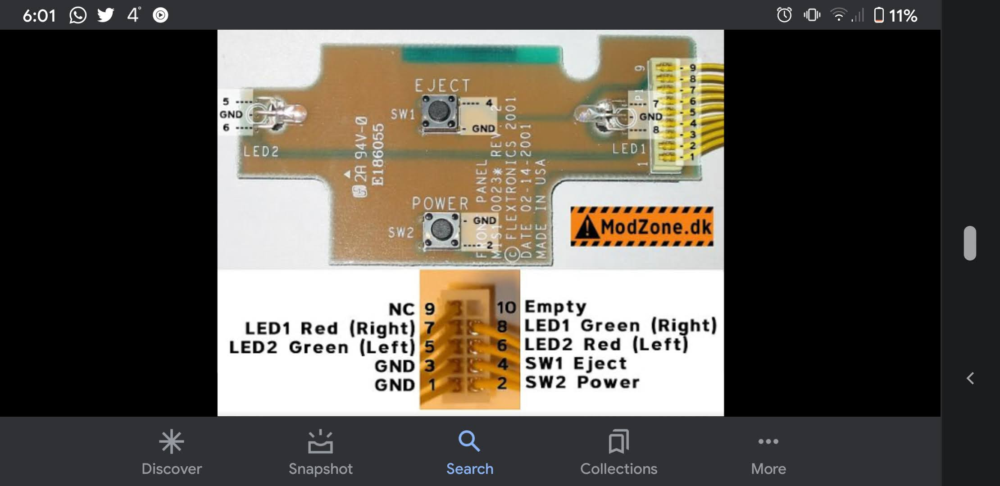
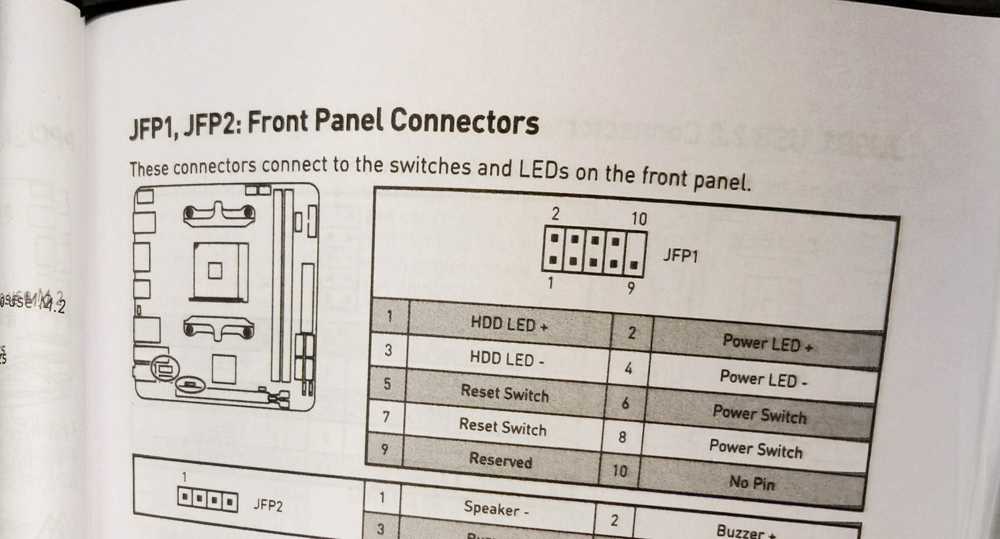
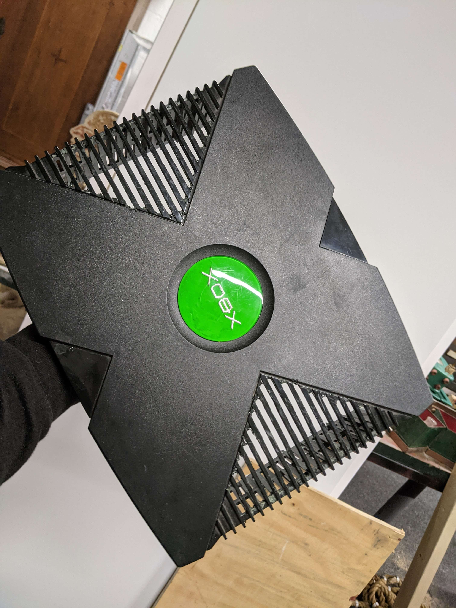
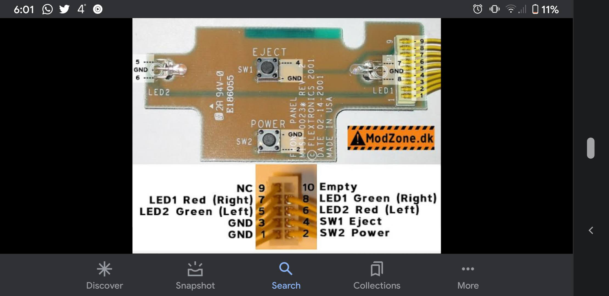

Welkom op de pagina waar ik mijn progressie ga bijhouden voor de bouw van mijn Xbox Pc.
Na het installeren van windows ben ik games gaan testen met de XBOX helemaal dicht (Dus de bovenkant zat erop) en ik ben tot de conclusie gekomen dat de CPU dan nogal snel warm word, na 30 minuten games draaien was de CPU al 93 graden dus een uur lang speln zou ervoor zorgen dat het overheat. Daarna heb ik wat testen gedan zonde rde bovenkant en kwam tot de conclusie dat het een wereld van verschil is, ik kam als max temperatuur 72 graden met 2 uur erop gamen. Dus in het kort, het is een succesvolle build, wel jammer dat de bovenkant eraf moet als je er goed gebruik van wilt maken maar dat is het meer dan waard.
 




